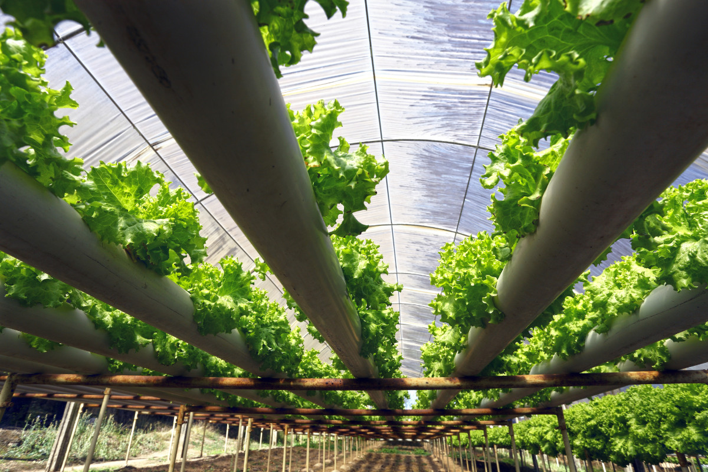
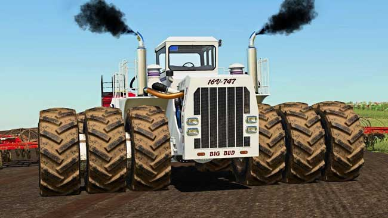
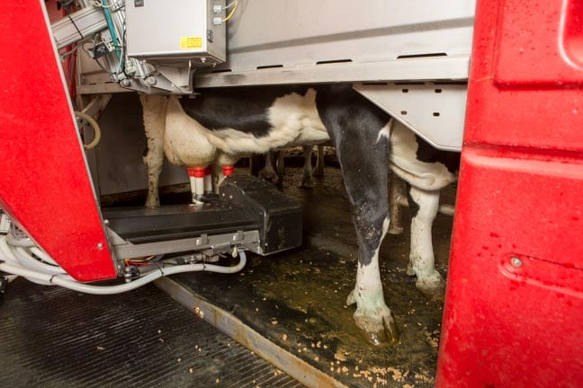

Agriculture is really important because it produces food, and one does really care about anything else if they are starving to death. Since agriculture now needs to producing more food for more and more people there are some cool new technologies coming out to increase production. Like robots on the farm to milk cows and weed between crops. As well as hydroponics that can grow food year around in urban spaces. Agriculture is also cool because of the really really being tractors and equipment that you can use.

Hydroponics being used in a greenhouse to grow crops in ideal conditions so that they grow faster.

The Big Bud 16V-747 is the world's largest tractor generating 1,100 horsepowers

Robotics can also be used to automate the milking process for cows, saving time and reducing labor needs.